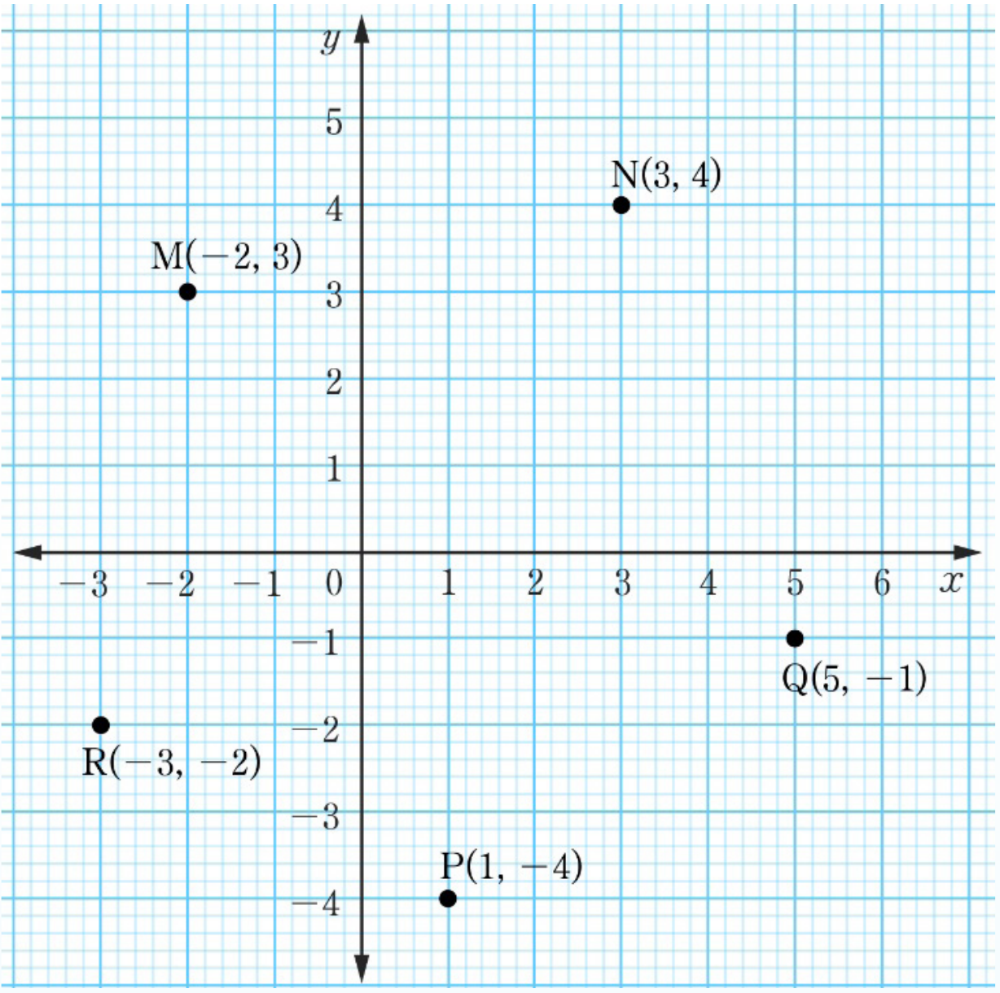

(c)
(d)
39.
(a) (b) (c) (d)
Chapter Six
Exercise 6.1
1.
Two number lines showing inequalities: x is less than or equal to 2, marked with a closed dot at 2 and shading to the left; and x is greater than or equal to negative 1, marked with a closed dot at negative 1 and shading to the right.